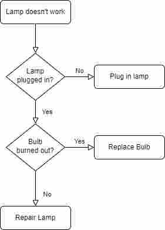

Computational Thinking
Logical Thinking
The structured approach
literally just programming
basically do it properly
Program Design
Use flow charts or pseudocode to lay out the algorithm

Test it with a trace table
(or just use an IDE that tells you what went wrong)
Concurrent Processing
- Concurrent processing is where multiple tasks are worked on at the same time, where the processor
alternates
between them.
- Parallel processing is where multiple instructions are executed simultaneously on different cores of the
processor.
Problems